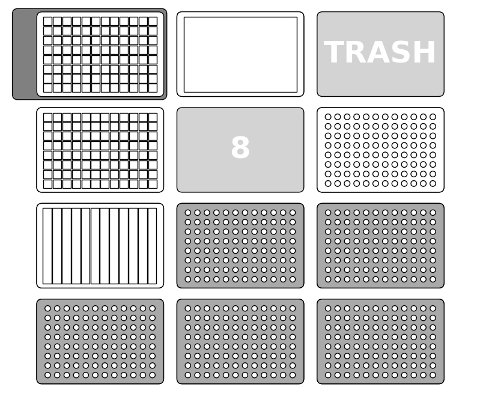

Felipe Xavier Buson
09 February 2024
OP_JN_002 v1.0
DNA extraction of 96-well cultures with magnetic beads
Description
This protocol carries out DNA extraction of bacterial cultures in a 96-deepwell plate with the magnetic module
For help with how to run Jupyter Notebook protocols, refer to our tutorial
Labware and Liquids

- Right mount: An 8-channel p300 pipette
- Slot 1: 12-well reservoir with buffers (fill up to volume for required samples: max 96 samples)
- Well 1: Lysis buffer (Up to 12 mL)
- Well 2, 3: Neutralization buffer (Up to 15 mL each well)
- Well 4, 5: Wash buffer (Up to 15 mL each well)
- Well 6, 7: Ethanol (Up to 12 mL each well)
- Well 8: Elution Buffer (Up to 10mL)
- Slot 7: 96-deepwell plate (square wells) with ressuspended bacterial cell pellets (in 120 uL ressuspension buffer)
- Slot 9: Output plate in 96-well format
- Slot 10: Magnetic module with 96-deepwell plate (square wells) with 100uL of magnetic beads
- Slot 11: 1-well reservoir for buffer waste
- Slots 1, 2, 3, 5, 6: Tipracks for p300
Execution
- Start by centrifuging the culture plate, removing the supernatant and ressuspending the pellets in ressuspension buffer
- Set up the deck as described above
- Run the cells one by one, paying attention to prompts and instructions
Script
DNA extraction of 96-well cultures with magnetic beads
Tips and best practices
This is a protocol with many manual steps. You will have to monitor and work along the robot throughout the whole protocol